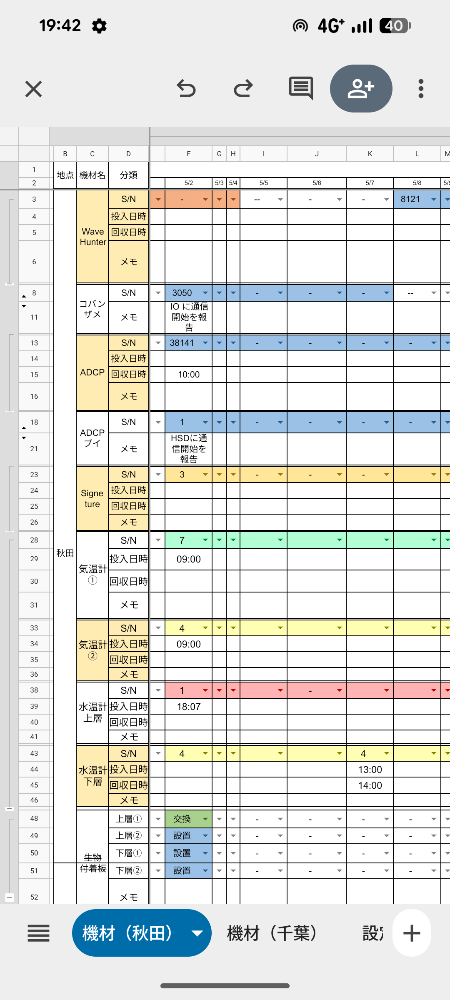
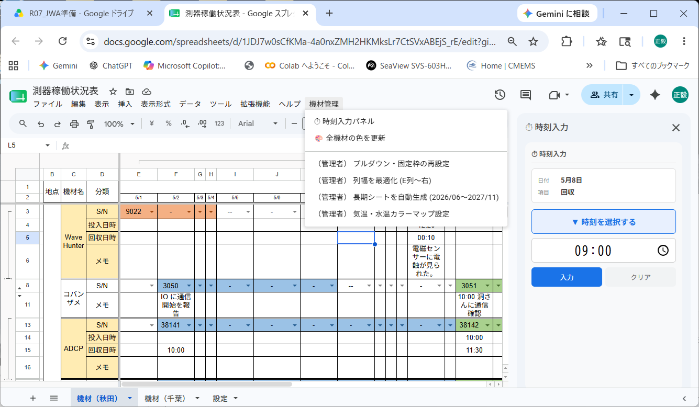
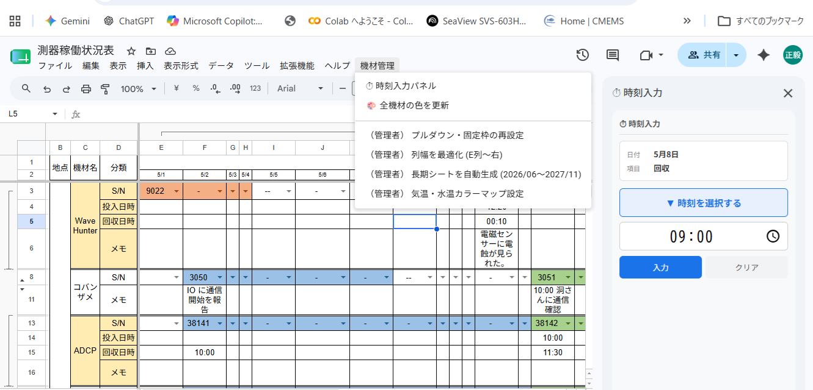
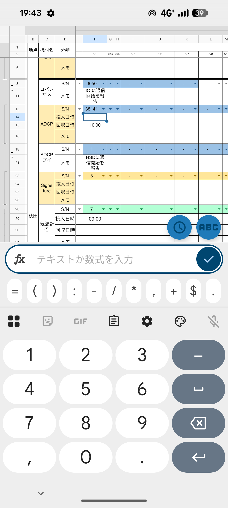
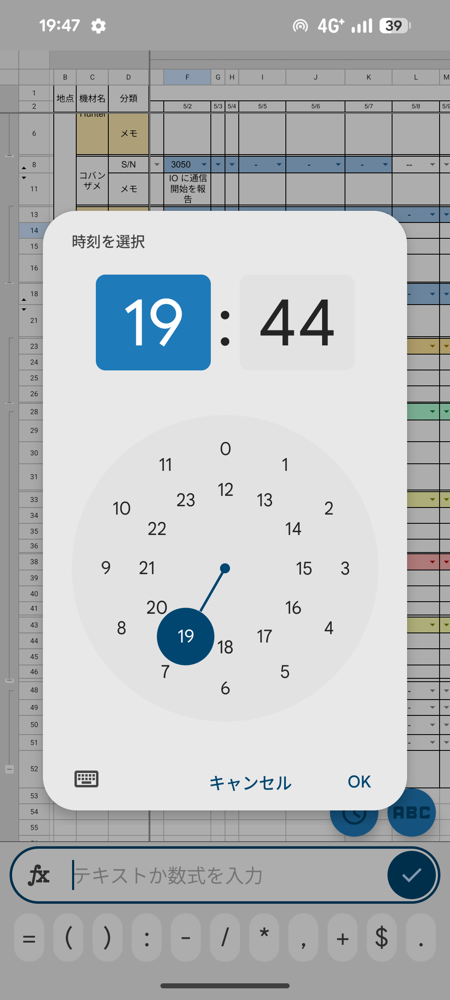

📋 測器稼働状況表 操作説明書
画面構成・入力方法・セル色のルール・時刻入力パネルの使い方（シート共有ユーザー向け）
📌 このシートについて
このスプレッドシートは、海洋測器（WaveHunter・ADCP・Signeture など）の
設置状況・稼働期間・投入/回収日時を日別に記録するための管理表です。
測器の S/N（製造番号）を入力するだけで稼働期間のセルが自動でカラー表示されるため、
どの機器がいつ稼働しているかが一目でわかります。
S/N の選択・投入/回収日時の入力・メモの記入・時刻入力パネルの使用
「（管理者）」メニューについて：
「機材管理」メニュー内の「（管理者）」と書かれた項目は管理者専用です。一般ユーザーは使用しないでください。
🖥 画面構成 ─ 3つのシート
画面下部（スマホでは底部のタブ）にシートのタブが並んでいます。
| シート名 | 役割 | 操作対象 |
|---|---|---|
| 機材（秋田） | 秋田地点に設置している測器の稼働状況を日別に記録する | 一般ユーザー |
| 機材（千葉） | 千葉地点に設置している測器の稼働状況を日別に記録する | 一般ユーザー |
| 設定 | 各測器の S/N リストと表示色コードを管理する（通常は変更しない） | 管理者のみ |

📊 サイトシートの行構成
「機材（秋田）」「機材（千葉）」の2シートは同じ構造をしています。
A〜D列は固定ラベル列（スクロールしても常に表示）、E列以降が日付ごとのデータ入力列です。
▼ 各測器ブロック（測器ごとに以下の行セットが繰り返されます）
「コバンザメ」と「ADCPブイ」は S/N 行とメモ行のみです（投入・回収日時の記録対象外）。
▼ 生物付着板ブロック（各サイトシートの最下部）

🔧 測器一覧
| 測器名 | 投入・回収日時 | S/N候補の管理列（設定シート） |
|---|---|---|
| WaveHunter | 記録あり | B列 |
| コバンザメ | 記録なし | H列 |
| ADCP | 記録あり | D列 |
| ADCPブイ | 記録なし | F列 |
| Signeture | 記録あり | L列 |
| 気温計① | 記録あり | N列（気温・水温計で共用） |
| 気温計② | 記録あり | N列（共用） |
| 水温計 上層 | 記録あり | N列（共用） |
| 水温計 下層 | 記録あり | N列（共用） |
✏️ S/N の入力と回収の記録
設置時の入力（S/N を選択する）
回収時の記録（-- を入力する）
--（ダブルハイフン）を選択します。
-」（シングルハイフン）の扱いに注意：空欄のセルや「
-」が入ったセルは「前の色を引き継ぐ」という意味になります。
稼働を終了させたい場合は必ず --（ダブルハイフン）を選択してください。
✏️ 生物付着板のステータス入力
🎨 セル色のルール ─ 測器（S/N 行）
S/N 行のセルは、設定シートで各 S/N に割り当てられた色で自動着色されます。 着色は「今日まで」が上限で、未来の日付列は常に白のままです。
着色の具体例（5/3 に設置・5/7 に回収した場合）
設置
回収
--
5/3 に「8121」を入力 → 5/3〜5/6 が水色に。5/7 に「--」を入力 → 5/7 以降は白にリセット。
S/N 行の入力値と色の変化まとめ
| 入力値 | 色の変化 | いつ使う |
|---|---|---|
S/N 番号（例: 8121） |
その日以降を設定色で塗る | 測器を設置した当日 |
-（シングルハイフン） |
変化なし（前の色を継続） | 「まだ設置していない」を明示したいとき |
--（ダブルハイフン） |
以降の列を白にリセット | 測器を回収した当日 |
| 空欄 | 変化なし（前の色を継続） | 未入力のセル（設置期間中は自動で前の色が続く） |
各 S/N に対応する表示色は「設定」シートで管理者が登録・変更します。 同じ S/N 番号でも異なる測器（気温計①と気温計②など）が異なる色になる場合があります。
🎨 セル色のルール ─ 生物付着板
生物付着板のセルは、プルダウンで選択したステータスに応じてそのセル 1 つだけに色が付きます。 測器とは異なり、色の引き継ぎは行われません。
| ステータス | セルの色 | 意味 |
|---|---|---|
| 設置 |
淡い緑
|
生物付着板が海中に設置されている |
| 点検 |
淡い黄
|
点検・交換の作業を実施した |
| 撤去 |
淡いグレー
|
生物付着板を撤去した |
| （空欄） |
白（色なし）
|
未記入 |
⏱ 時刻入力パネルの使い方 ─ PC
投入日時・回収日時の行への時刻入力には、時刻入力パネル（右サイドバー）を使うと便利です。
直接セルに HH:mm 形式（例: 09:30）で入力することもできます。
起動手順
時刻の入力手順
サイドバーに「日付」と「項目（投入 / 回収）」が表示されれば準備完了です。

パネルが反応しない場合： 投入日時・回収日時の行以外のセルを選択している可能性があります。正しい行のセルをクリックし直してください。
⏱ 時刻入力パネルの使い方 ─ スマホ
スマホでは、セルをタップするとキーボード上部のツールバーに時計アイコン（⏰）が現れます。 タップすることでスマホネイティブの時刻ダイヤルが起動します。
操作手順
投入/回収日時行以外のセルをタップしているとアイコンは表示されません。正しい行のセルをタップし直してください。

② キーボードツールバーの時計アイコン（⏰）をタップ

③④ 時刻ダイヤルで時・分を選択して「OK」
測器稼働状況表 操作説明書 ─ 2026-05-24